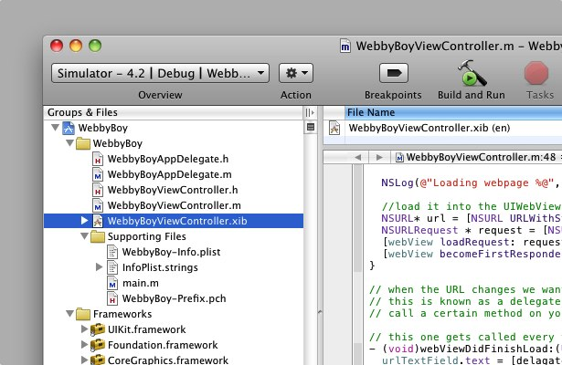
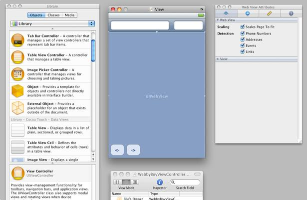

Learning iPhone programming
- For this you must know some programming, or be pretty damn smart. We'll be going fast, leaving a lot of dead projects behind us. Don't worry. There'll be more to take their place.
- Press left / right to move through pages.

So let's look at what you know
Cpp - Objects Optional
#include < iostream>
int main()
{
const std::string message = "Hello, world";
std::cout << message;
return 0;
}
or
Java - Forced use of Objects
class myfirstjavaprog
{
public static void main(String args[]) {
System.out.println("Hello World!");
}
}
Object Oriented Programming 101
Classes are great. We use them to model things.
Wanna make a chess game? Then you'll probably want to create a class for each of the types of pieces on the board, and a class for the board itself.
In our last examples: String is a class.
Objects are great because we can have lots of similar objects either inherit a lot of behavior from each other, for example. You may want to make a driving game. You can make a car object, then have other cars inherit from it and do more with the object.
Car object (psudo code)
class Car {
wheels = 4
speed = 10
drive(){
go_forwards( speed )
}
honk(){
say "beeep"
}
}
We can take the car object and extend it to make different types of cars without having to re-write large chunks of code.
Truck object (psudo code)
class Truck extends Car {
speed = 5
honk(){
say "HOOOOONKKKKK"
}
}
or a super fast car
Ortamobile object (psudo code)
class Ortamobile extends Car {
speed = 200
honk(){
say "neeeawwwnggggg"
}
}
iOS / Mac OS X we use objective-c. It's pretty crazy.
Like C++ objects we use Header files. These files are a way of showing what the object will do, so you can quickly get an overview of responsibilities.
Car.h ( Obj-C Header )
#import < Foundation/Foundation.h>
@interface Car : NSObject(
// object variables go here
int speed;
int wheels;
)
// object functions ( or methods ) go outside
-(void)drive;
-(void)honk;
@end
After looking at this we can tell that a car has a speed variable, and a wheels variable, though we don't know what they are. Because we cannot set their values in the header.
Its complement is the implementation file.
Car.m ( Obj-C Implementation )
#import "Car.h"
@implementation Car
-(id)init {
self = [super init];
speed = 10;
wheels = 4;
return self;
}
-(void) honk {
NSLog(@"Beep");
}
@end
NSLog() is like cout, or like println() it lets us write things out to the debug log.
So in simple, a Class would look like this
Car.h ( Obj-C Header )
@interface Car : NSObject(
// object variables go here
)
// object functions go outside
// but before the @end
@end
and
Car.m ( Obj-C Implementation )
#import "Car.h"
@implementation Car
// actual methods go here
@end
Alas, it’s not that easy.
We’re working with a GUI, and that means you’ve got a lot more things to think about. So before we get started on what additional syntax we have to deal with iOS dev, we’re going to have to get some words right.
| name |
meaning |
| Objective-C |
Objective-C is a programming language, a lot like C++. It’s got a few tricks up its sleeve that gives it some advantages over C++ at the expense of some speed. It’s really only used on Mac OS X and iOS. |
| Frameworks or Libraries |
A framework or library is a collection of classes made for you to use, in C++ you probably use std as your library, and in Java, well, I guess you used Java’s native classes. |
| UIKit |
UIKit is the framework that gives us all the shiney touch controls, and provides access to everything from the accelerometer to the speakers. |
| Cocoa |
Cocoa is the framework that UIKit is built off, when you see classes beginning with NS they come from Cocoa. Like NSString. Cocoa’s been around since the NextStep days in the 80s. |
| # |
This is a hash. This is a pound: £ |
When writing applications for iOS, you say you’re writing Objective-C with UIKit.
thought that was all?
So, that’s just the language. Let’s talk about the tools. We use two applications to make iOS apps. Those being XCode 3 and Interface Builder.
| name |
meaning |
| XCode |
XCode is the tool you’ll be writing all your code in, you may have used Visual Studio or Eclipse before, it’s like that, but made by Apple. XCode is for handling all of the code aspects of writing your application; like your header (.h) and implementation (.m) files. |
| Interface Builder |
Interface Builder is the tool that handles all the design and hooking up between objects in UIKit/Cocoa it’s a completely seperate application, so in order that Interface Builder sees the latest versions of your header files you have to save them in XCode. |
XCode 3
XCode holds all your project files, you can see in there a few m files, a few h files a xib file and some other supporting files. I wouldnt worry about those.
The xib file is an InterfaceBuilder file, and it is what you use to connect objects together and to make your shiney interfaces. You can also spot a few frameworks included at the bottom.

Interface Builder
Interface Builder is the application that is used to visually set your application up
For almost everything you do for applications you’ll be working with xib files and thus using Interface Builder. So you’ll get pretty familiar with it.

What now? Read these
Wonder how I learned this all? Apple have great documentation